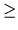

| Symbolic Numerical System |
and p( . ) the function that associate to each symbol of the alphabet the
corresponding position in the list (first element
with position zero). The symbols in the alphabet will be called digits
and are assumed to be one character length. Fix
a digit b of the alphabet, called the base, such that
p(b)2. Then,
for any integer N there exists a sequence of r digits
d0,..., dr - 1 (r depending on N) satisfying
p(di) < p(b)
(
i = 0,..., r - 1) and such that N can be decomposed in
the following way:
| N | = | p(d0)×[p(b)]0 + p(d1)×[p(b)]1 + ... + p(dr - 1)×[p(b)]r - 1 | |
| = | p(d0) + p(d1)×p(b) + ... + p(dr - 1)×[p(b)]r - 1. |
We say that N is represented (under the alphabet A) in base b as
For example, let
A = [0, 1, 2, 3, 4, 5, 6, 7]. As far as the decimal number 2548 is equal to
| 0 + 0×7 + 3×72 + 0×73 + 1×74 | |||
| = | p(0) + p(0)×p(7) + p(3)×[p(7)]2 + p(0)×[p(7)]3 + p(1)×[p(7)]4, |
it is represented in base 7 as
Another example: the usual binary system is obtained choosing A = [0, 1, 2] and b = 2.
Given an alphabet A, not containing the symbol question mark (?),
and given (partial information about) three numbers
represented in an unknown base b, write a program that determines,
if possible, the base b for which the third number
is the sum of the first two. If there are several solutions, the
base b with the smallest position p(b) must be presented.
Assume that the maximum length of the alphabet and of the numbers
is 70 characters.
The input contains four lines terminated by newline character. The first defines the alphabet A; the others the three numbers, possibly with some digits deleted (marked with the question mark symbol). To ensure the uniqueness of the output, it is assumed that for the same position the three numbers have at most one digit deleted (at most one question mark symbol for each position).
In the output write four lines: the first with the desired base;
the others with the three numbers completely specified
(the question marks must be replaced with the appropriate digits).
If the sum is not possible, there must be no output.
1 *!30zx9bdk ?z b !*?
d bz b !*0